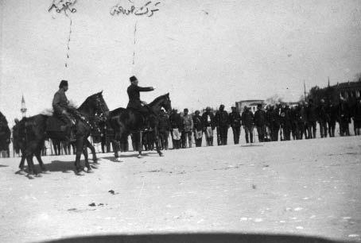
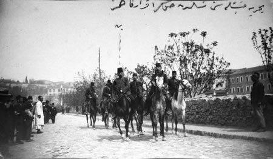
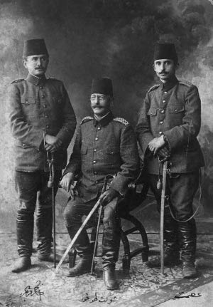
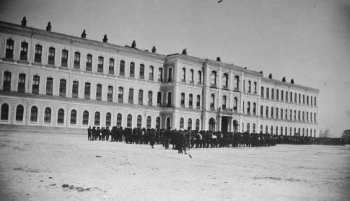

3 Nisan 1325. İlk trene Onikinci Alay’ın iki taburu ile ben de binerek Çatalca’ya indik. (4 Nisan sabah 6’da.) Orada Üçüncü Ordu’nun ilk treni ile gelen Erkân-ı Harp Muhtar Bey’le (Şehit Muhtar Bey) iki ordunun cephesini taksim ettik. İstanbul cephesini Üçüncü Ordu kıtaatı ile kendisi, Beyoğlu ve Yıldız cephesini de sol cenahı alarak İkinci Ordu kıtaatı ile ben temine karar verdik.
Çatalca askeri, bizden evvel padişaha arz-ı tazimat için İstanbul’a çekilmişti. Müsademesiz bu hattı geçerek vaziyete hâkim olduk.
Bu askerlerin iadesi için Nâzım Paşa’nın Çatalca kumandanlığına emrine karşı, “Köprüler yıkılmıştır, İkinci ve Üçüncü ordular kıtaatı gelmektedir, Çatalca askeri artık gelemez, yola çıkarılırsa gönderenler mesul olacaktır” tarzında cevap yazdık.
Askerimiz arasında İstanbul’dan gelen sarıklı, kisveli insanların ve gazetelerin zehir saçtığını görünce bu kabil insanları tevkif, gazeteleri de yaktırdım. Yapılan propagandanın en zehirlisi, “İstanbul’da öldürülen zabitler kabuklu (sünnetsiz) imiş” cümlesi idi. Bu cümle, hareket esnasında benim de işime yaradı.

31 Mart 1325 (1909) Vakası’nı tenkil için Edirne’den gelen fırkanın kumandanı Şevket Turgut
Paşa ve erkân-ı harbi Kâzım Karabekir

Bahriye kışlasını teslim aldıktan sonra Karabekir ve karargâh, 1909
Benim staj müddetim olan iki yıl Manastır’da Üçüncü Ordu kıtalarında geçmişti. Staj yaptığım Üçüncü Avcı Taburu da İstanbul’da asiler arasında idi. Yeri de Taşkışla idi. İkinci Ordu’ya Meşrutiyet’in ilanından sonra gelmiştim. Birkaç ay da burada hizmet etmiştim. Bu ordunun zapturaptı daha yüksek fakat hiç müsademe görmemişlerdi. Üçüncü Ordu’nun pek pişkin olan her üç avcı taburunun da İstanbul’da nasıl bozulduğunu ve irticaa alet olarak diğer kıtaları beraber sürüklediğini düşünerek, ben Hareket Ordusu erkân-ı harbiyesine şu teklifte bulundum:
“Fırkaları mürettep yapmak muvafıktır. Bu suretle gerek İstanbul’a ve gerekse Beyoğlu ve Yıldız’a karşı her iki ordu da iştirak etmiş bulunur. Birinin zapturaptı diğerinin müsademe kudreti bu suretle birbirine eklenerek muvaffakıyet daha kolay elde edilir.”
Her iki orduyu yakından tanıdığımdan bu teklifim muvafık görülerek kabul olundu.
Beyoğlu ve Yıldız’a karşı emrimizdeki mürettep ikinci fırka gönderildi. 10 Nisan’da fırkamız Silahtarağa civarında toplandı, ve asilerin toplu bulunduğu Taşkışla ve Taksim kışlalarına karşı hareket ve Yıldız’ı tarassut etmek üzere vaziyet aldı. 11 Nisan’da her iki kışla da şiddetli müdafaaya başladı. Bunun uzun sürmesi Yıldız askerini ve Abdülhamid’i cesaretlendirebilirdi. Karargâhımızı Pangaltı Harbiye Mektebi’nde tesis etmiştik. Ben şu hareketi fırka kumandanım Şevket Turgut Paşa’ya teklif ettim: “Yıldız’la Taşkışla’nın arasını bir an evvel kesmeliyiz. Ne Kababut (şimdiki Hürriyet-i Ebediye tepesi) civarındaki ihtiyat kuvvetimiz, ne de Yıldız’ı tarassut eden süvari alaylarımız müsademe akşama kadar bitmez ise Yıldız askerinin yardımına ve Abdülhamid’in işi açıktan açığa ele almasına mâni olamaz, ihtimal gece kıtalarımız arasına da birçok mürteciler sarıklı veya sair kıyafetlerde dalarak fesat saçmaya çalışacaklardır. Vaziyeti bu fenalıklardan korumak için Maçka sırtlarını kuvvetli tutmalıyız. Bunun için fırka karargâhı ile Teşvikiye Camii cihetine gidelim ve eldeki kuvvetle Maçka kışlasını işgal ettirelim. Bu suretle hem o cihetten Taşkışla’yı topçu ile de dövdürürüz, çabuk sukutunu temin ederiz, hem de Yıldız’la arasına girerek rabıtayı keser Yıldız’ın cesaretini kırarız.”
Bu teklifimi Şevket Turgut Paşa pek muvafık bulduğu gibi yanımızdaki Enver Bey de pek beğendi. Çünkü Taşkışla pek şiddetli mukabele ediyordu. Harbiye Mektebi manej talimhanesindeki topçu müfrezesi bir hayli telefat vererek manen sarsılmıştı. Taşkışla’daki avcıların yıllarca müsademelerde müthiş yetiştiğini ikimiz de bunlarla hayli müsademeler yaparak bilirdik. Müsademe geceye kalırsa bunların mukabil taarruza geçeceklerine ikimizin de şüphesi yoktu.
Hemen atlara bindik ve Teşvikiye Camii’nin önüne geldik. Fırka flamasını da parmaklıklı kulübe cihet-i nihayeti önüne diktik.
Vaziyeti tetkik ederken Üçüncü Ordu’ya, mensup bir batarya kumandanı telaşla ve yaya olarak yanımıza gelerek pek fena bir haber verdi:
“Bataryamın vaziyeti fecidir. Ne yapacağımı şaşırdım. Yıldız askerleri silahlı olarak geldiler, topların üzerine oturdular, ateş ettiğiniz din kardeşlerinizdir, ne yapıyorsunuz diye bağrışmalar ve tekbir getirmeleri bizim askeri şaşırttı. Ateş kestiler ve birbirleri ile konuşmaya, anlaşmaya başladılar. Batarya elimizden çıkmıştır. Askerimizin de Yıldız askeri ile anlaşarak asiler tarafına geçmelerinden korkarak şaşkın bir halde geldim.”
Bu müthiş haber karargâhımızı fena sarstı. Kaybedilecek dakika Hareket Ordusu’nun feci bozgunluğunun başlangıcı olabilirdi. Karargâhla buraya tam vaktinde yetiştiğimize hamdettim. Kumandanıma dedim:
“Paşam bana müsaade, batarya yanına koşayım, vaziyeti bizzat görüp ele almalıyım. Karargâh burada kalsın.”
Müsaade alarak batarya kumandanı ile birlikte koşarak batarya yanına yürüdüm. Batarya Maçka Caddesi ile Teşvikiye’den Beşiktaş’a inen yolu birleştiren ilk sokak ağzında Taşkışla’ya karşı yer almıştı.
Bizim koşarak geldiğimizi gören Yıldız askerinden bir kısmı bize doğru koştular ve etrafımızı el ile tutulur bir mesafede sarıverdiler.
Haykırışıyorlardı: “Günah değil mi? Din kardeşlerini birbirine vurduruyorsunuz. Taşkışla’dakiler de İslam değil mi?”
Her kafadan bir ses çıkıyordu. Pek çabuk ve tılsımlı bir sözle bunları teskin etmek gerekti. Aksi halde biri süngüsünü dürtüverir veya arkadan biri, “Vurun ne duruyorsunuz?” diyebilirdi.
Sesim çıktığı kadar haykırdım:
“Ey din kardeşlerim. Ben de bunun için koşarak geldim. Sebep olanlar Allah’ın gazabına uğrasınlar. Biz hudutları boşalttık da buralara geldik. Bu işi çabuk halledelim ve yine yerimize dönelim, sizler de yine kışlalarınızda İstanbul’da kalın. Bizim zabitlerimiz de, askerlerimiz de, elhamdülillah hepimiz İslamız.”
“Biz de İslamız elhamdülillah” diye bağrışmalar başladı, ve her ağızdan bir söz çıkıyordu. Bu aralık gayet güzel bir Arap kısrağına binmiş bir çavuş da peyda oldu. Tüfeği yok, belinde kasaturası var. Elebaşı Hamdi Çavuş imiş.
Dedim: “Asker kardeşlerim, bu böyle olmaz evvela ben söyleyeyim, sonra sizin içinizden seçeceğiniz arkadaşlarınız bana cevap versin.”
Buna razı oldular ve bölük emini Ahmet’i seçtiler.
Dedim: “İstanbul askerinin arasına bazı Ermeniler sarık sararak, asker elbisesi giyerek karışmışlar. Ordumuzu fesada vererek memleketimizi mahvetmek için zabitlerimizden birçoklarını da öldürmüşler. Zavallı askerlerimiz neye uğradıklarını anlayamayarak bu melunların sözlerine inanmışlar. İşte Taşkışla’daki avcı taburlarının arasında bunlardan birçokları var. Bunları bize avcı neferleri gelip haber verdi... Biz Taşkışla’daki Ermenilerle müsademe ediyoruz. İslam olan askerler gelip bizimle birleşiyor. Biz de doktorlarımıza ve hocalarımıza onları muayene ettiriyoruz. Kabuklu mu, kabuksuz mu anladıktan sonra içimize alıyoruz. Size sorayım, hiçbir asker kendi zabitanını öldürür mü?”
“Hayır, hayır efendim.”
“Peki hiçbir asker, padişahına, kumandanına isyan eder mi?”
“Hayır, hayır!” diye bağrıştılar.
Bölük emini Ahmet dedi: “Efendim, ah... Bilseniz padişahımız ne iyi insandır. Bu sabah Yıldız’a gittik, vallahi kendi eliyle bize kulüp cigaraları dağıttı, hepimize evlatlarım diye iltifat etti. İstersen sen de gel gidelim, padişahımızla konuş, bak ne mübarek bir zattır.”
Dedim: “Gördünüz mü, böyle bir padişah Taşkışla’daki askerlere, gelen arkadaşlarınıza ateş edin der mi? Bizim vazifemizin ne olduğunu padişahımız da bilir, çünkü bize o emretti de koşup geldik. İçinizdeki kabukluları ayıracağız.”
Bağrıştılar: “Efendim biz İslamız, böyle söyleme.”
Dedim: “Aranıza asker kıyafetiyle bir düşman girdiğini siz ne biliyorsunuz? Hani sizin zabitleriniz? Düşmanlar hep zabitleri öldürüyor da sizin hâlâ bir şeyden haberiniz yok. Benim kumandanım bir paşadır, şurada, caminin önünde. Mademki zabitleriniz yok, çavuş, onbaşı da o demektir. Kimlere itimadınız varsa seçin beraber gidelim, onunla konuşsunlar, sonra birlikte padişahımıza da gidip işi anlatsınlar. Biz gelinceye kadar siz burada topların yanında durun, Topçu zabitine de emir veriyorum, biz gelmeden ateş etmesin.”

Kâzım Karabekir, Şevket Turgut Paşa, İsmet (İnönü), 1909
Bu teklife razı oldular. Hamdi Çavuş, bölük emini Ahmet, ve diğer iki çavuş daha seçtiler. Bunlarla ben fırka karargâhına geldim. Ve hemen şunu söyledim: “Paşam, Yıldız askerini idare eden çavuşlar bunlardır. Bağlayın bunları!” diye zabitlere ve neferlere haykırdım.
Müthiş bir hücumla bunların ellerinden silahlarını aldık. Ellerini arkalarına bağladık. Askerlerimiz bunları epey hırpaladı. Hemen Harbiye Mektebi’ndeki karargâha hapsolunmak üzere zabit kumandasında bir müfreze ile sevk ettik.
Ben tekrar Yıldız askerinin yanına koştum ve onlara dedim:
“Merhaba asker!”
“Merhaba efendim.”
“Çavuşlarınıza paşa da cigara ikram etti. Müzakere etmek üzere birlikte Yıldız’a yola çıktılar. Haydi siz de kışlalarınıza dönünüz yolda onları bulacaksınız, çabuk koşun.”
Başsız kalan asker, bir koyun sürüsü gibi topları bırakarak Yıldız yoluna koyuldular. Zavallılar bana yalvarıyorlardı. “Beyim arkamızdan top attırma.” Gözlerim yaşardı. Bu melek kadar saf olan Mehmetçikleri fesada verenlere lanet ettim ve haykırdım: “Siz bizim evladımızsınız, korkmayın, selametle gidin, kışlalarınızda rahatınıza bakın.”
Geniş bir nefes aldım, batarya efradına da aynı sözleri tekrar ederek onların karışan akıllarını yerine getirdim ve karargâha gelerek müjdeyi verdim. Yıldız’a giden sokakları da tutturmuştuk ve orada elimize geçen Üçüncü Ordu taburlarından biriyle bizzat Maçka karakoluna hücum ederek burayı işgal ettik.

Hareket Ordusu Harbiye Nezareti önünde
12 Nisan’da, Şevket Turgut Paşa ile Harbiye Nezareti’nde Hareket Ordusu karargâhına gittik. Mahmut Şevket Paşa ile Hareket Ordusu Erkân-ı Harbiye Reisi Ali Rıza Paşa hareket etmek üzere idiler. Yıldız harekâtının acilen icrası lüzumu hakkındaki teklifimize karşı hazır bulunan Üçüncü Ordu Erkân-ı Harbiye Reisi Pertev Paşa ile görüşerek kararlaştırmaklığımızı emrederek gittiler. Pertev Paşa’nın odasında, masanın karşısına Turgut Paşa ile birlikte yan yana oturduk. Pertev Paşa yarınki 13 Nisan günü, fırkamızla Yıldız’a yapılacak hareket emrini kendi eliyle yazdı. Bu ordu makamının vereceği emir değil, Şevket Turgut Paşa’nın vereceği mufassal fırka emri idi. Sıra imzaya geldiği zaman benim sabrım tükendi ve kendilerine, “Müsaade buyurun da imzayı olsun fırkanın kumandanı atsın” dedim. Cevaben, “Monşer ben şemetr [chez-maître] taraftarı değilim” diye hiddet buyurmakla beraber bu hakkı teslim ve emri Şevket Turgut Paşa’ya imzalattılar.
Harbiye Mektebi’ndeki karargâhımıza avdette kıtaata lazım gelen emirleri verdik.